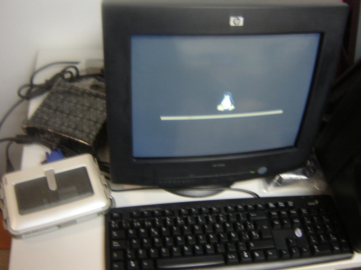
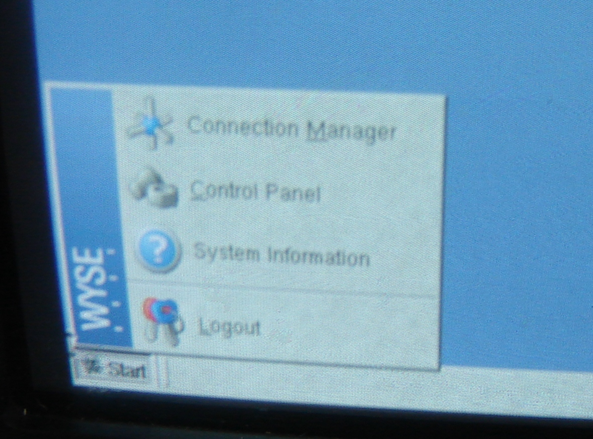
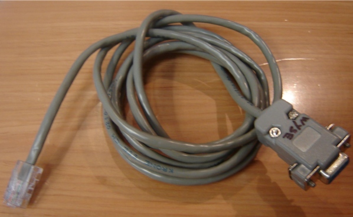

Encender la terminal, cuando aparezca el pinguino (Tux), presiona G varias veces. El sistema de inicio se interrumpirá.

Cuando aparezca la ventana Network, se debe configurar lo siguiente:
Use fixed values
IP Address: 192.168.1.1
Subnet Mask: 255.255.255.0
Dar clic en OK
Dar clic en Start, Connection Manager.

Dar clic en Add
Select the type of connection to create: TEC
Dar clic en Next
Se abre la ventana Terminal Emulator Configuration.
En la pestaña Network, selecciona: Serial Connection
Description: Yum
Port: COM1
Terminal Type: IBM 3151
En la pestaña Window, selecciona: Full Screen
En la pestaña Connection, selecciona: Auto Connect.
Dar clic en OK
Cerrar la ventana Connection Manager. El ícono de la conexión aparecerá del lado superior izquierdo.
Dar clic en el botón Start, Control Panel.
Seleccionar Screen Saver.
Screen Saver Type: None
Dar clic en OK
Seleccionar Ports. Checa que Flow Control de COM1 este en None.
Seleccionar System Preferences, seleccionar la pestaña User Configuration.
Default Privilege Level: None. Muy Importante: al hacer esto la terminal queda cerrada y ya no se puede cambiar nada. Solo se puede reinicializar a modo default de fabrica con g al cargar y hacer todo de nuevo.
Dar clic en OK
Rebootear con "Start, "Logout", "Restart the system"
La terminales winterm, se conectan mediante un cable que de un lado es de forma telefónica y del otro cuadrangular, idéntico al siguiente:
Este cable debe de ir conectado en uno de los puertos seriales de la parte trasera de la terminal, en la imagen se muestra cada una de las entradas traseras de la terminal, la primer entrada es para la corriente, cuyo cable se muestra en la imagen subsecuente, la siguiente entrada corresponde al monitor, después viene la entrada que corresponde al cable que se mostró anteriormente y corresponde a la señal de la computadora, la siguiente entrada corresponde a la red, su entrada es similar a la de un cable telefónico, pero de mayor tamaño, y por último una entrada para el teclado y ratón.
Cable de corriente de la terminal:
Vista trasera de la terminal: